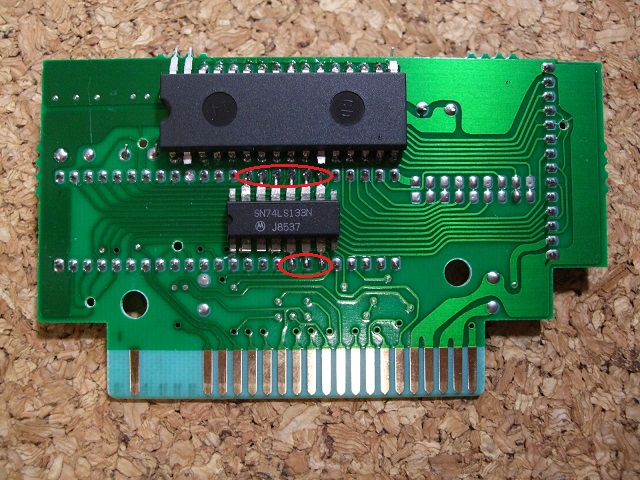
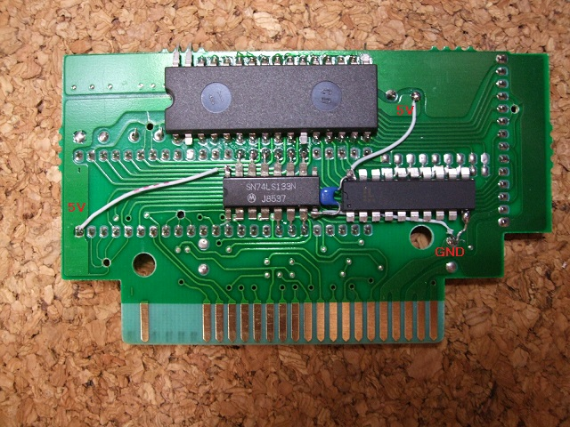

８．その他のICの取り付け
ここで基板裏面にHC133、GAL16V8Dを取り付けます。

HC133の位置は写真を参考に慎重に決めてください。HC133の5-7ピンが2212P003の32-30ピンに、
HC133の10-15ピンが2212P003の19-14ピンに合うように両面テープで基板に固定し、半田付けします。
そのためにHC133の5〜7ピン、10〜15ピンはピン先をちょっとしか切らずに広げていました。回路図では
スロットの信号につなぐように見えますが、実際はスロットからの信号が2212P003に来ているので、
そこにつなげています。

GAL16V8Dの位置は割と適当で構いません。写真を参考にとりあえず両面テープで基板に固定します。
HC133の8ピンGNDとGAL16V8Dの20ピンの間にパスコンを入れておきます。
HC133の16ピン(VDD)を基板の5Vと接続します。
GAL16V8Dの20ピン(VDD)を基板の5Vと接続します。
HC133の8ピン(GND)とGAL16V8Dの10ピン(GND)を基板のGNDと接続します。
 次へ
次へ